Manual de usuario · v0.7.1
Tus cuentas de CaixaBank, ordenadas solas.
FAMILYFIN lee los extractos que descargas de CaixaBank, clasifica cada movimiento con tus reglas y te enseña en qué se va el dinero. También sigue tu cartera de inversión con cotizaciones reales y prepara los datos de la renta. Lo consultas desde el navegador del portátil, el iPad o el iPhone.
Web segura (HTTPS) en tu red
iPhone · iPad · portátil
Datos solo en tu PC
Capturas con el usuario de demostración DEMO
https://192.168.1.20:8765
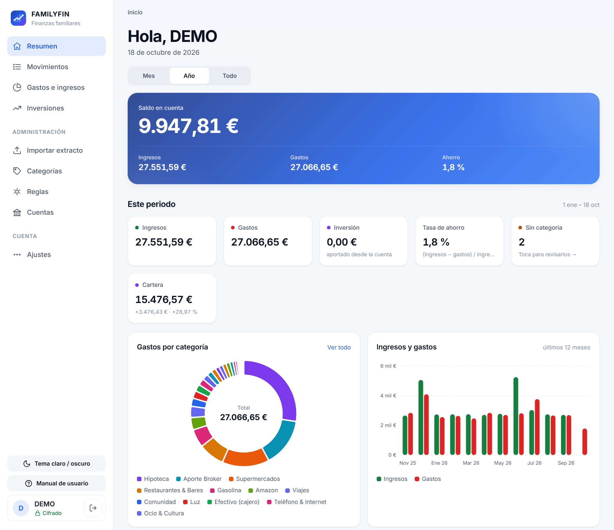
Qué es
Del extracto del banco a tus gráficas
FAMILYFIN se instala en un PC con Windows, que guarda los datos y sirve una web privada y cifrada a los dispositivos de casa. Descargas el Excel de movimientos desde CaixaBank Now, lo subes y la aplicación hace el resto: comprueba el fichero, descarta lo que ya tenías, pone categoría a cada movimiento y actualiza los paneles. Nada sale de tu red; solo se consultan cotizaciones bursátiles públicas.
- Pensado para el formato de CaixaBank. Entiende sus 24 columnas, el preámbulo, los saldos positivos y negativos y el texto «Fecha de operación» que añade a las compras con tarjeta.
- Sin duplicados. Puedes importar extractos que se solapan: lo repetido se descarta y lo dudoso te lo pregunta.
- Reglas a tu medida. «Si el comercio contiene MERCADONA → Supermercados». Lo que corriges a mano nunca lo pisa una regla.
- Inversión con datos reales. Posiciones, plusvalías, rentabilidad anualizada, dividendos y el resumen fiscal FIFO para la declaración.
Primeros pasos
Instalar, crear tu usuario y entrar
https://192.168.1.20:8765/login
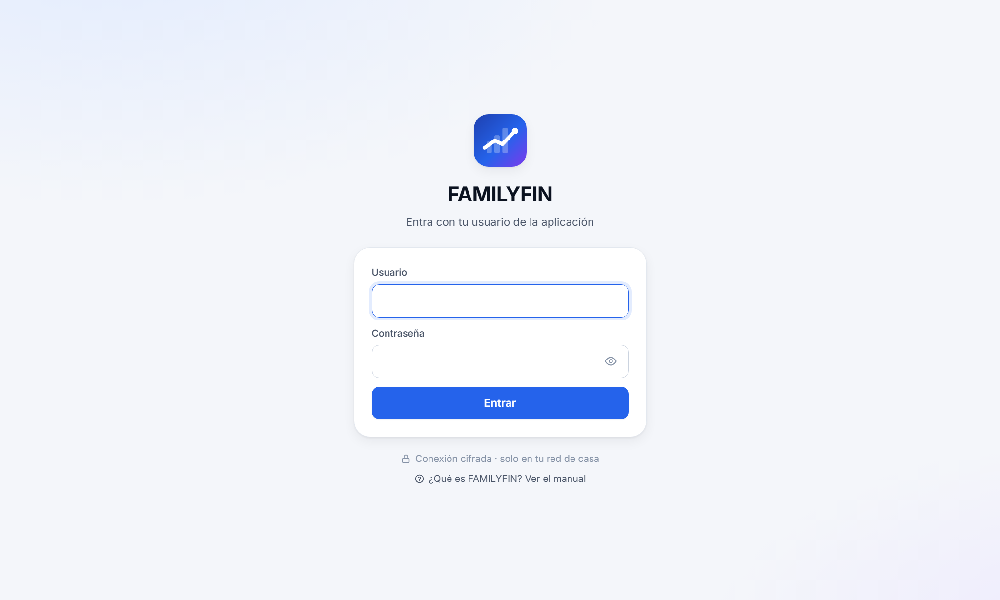
En el iPhoneEl mismo acceso, a tamaño de móvil.
Instala en el PC
FAMILYFIN se entrega como una carpeta para Windows: se descomprime y se abre PROFIN.exe. No necesita instalador.
Crea tu usuario
En la pantalla de acceso del PC pulsa «¿Primera vez? Crear cuenta». Cada miembro de la familia tiene el suyo y nadie ve los movimientos de los demás. Desde el móvil, pide a alguien de la familia una invitación (Ajustes → Familia → Invitar a alguien) y escribe el código en «¿Tienes un código de invitación?» de la pantalla de acceso.
Activa el acceso web
En el PC, Configuración → Acceso web. Cada iPhone o iPad instala una vez el certificado de FAMILYFIN y queda el candado de conexión segura.
Entra desde cualquier dispositivo
Abre la dirección https://…:8765 en Safari o Chrome con tu usuario y contraseña. Desde Safari, «Añadir a pantalla de inicio» la deja como una app.
La interfaz
Anatomía de la pantalla
En el portátil y en el iPad en horizontal, la web muestra un menú lateral fijo; en el iPhone, ese menú pasa a una barra de pestañas abajo. El contenido es el mismo.
https://192.168.1.20:8765
1
2
3
4
5
6
7
8
9
10
- 1MarcaVuelve al resumen desde cualquier pantalla.
- 2ConsultaResumen, Movimientos, Gastos e ingresos e Inversiones.
- 3AdministraciónImportar extracto, Categorías, Reglas y Cuentas.
- 4AjustesTu cuenta, informes, apariencia y sesiones abiertas.
- 5TemaCambia entre claro y oscuro en este dispositivo.
- 6Usuario y salirEl candado verde confirma la conexión cifrada.
- 7PeriodoMes, año o todo; las cifras se recalculan al momento.
- 8Saldo en cuentaÚltimo saldo del extracto con ingresos, gastos y ahorro.
- 9IndicadoresIngresos, gastos, tasa de ahorro, pendientes de categorizar y valor de la cartera.
- 10GráficasGastos por categoría e ingresos frente a gastos de los últimos 12 meses.
Tema claro y oscuro
Arrastra el control para comparar los dos temas sobre la misma pantalla. Por defecto la web sigue el modo del dispositivo; en Ajustes → Apariencia puedes fijarlo.
Resumen
Todo tu mes en una pantalla
Es la pantalla de inicio. El periodo (mes, año o todo) cambia todas las cifras a la vez.
- Saldo en cuenta: el último saldo que figura en el extracto.
- Ingresos y gastos del periodo.
- Inversión: lo que has enviado desde la cuenta a tus inversiones en el periodo (lo que vuelve del bróker lo descuenta). Cuenta los movimientos con una categoría del tipo INVERSION, como «Aporte Broker»; esos movimientos no suman como gasto ni como ingreso en esta pantalla.
- Tasa de ahorro: (ingresos − gastos) ÷ ingresos.
- Sin categoría: los movimientos pendientes de clasificar. Al tocarlo te lleva a ellos.
- Cartera: valor actual de tus inversiones y su plusvalía.
Debajo, el donut de gastos por categoría («Ver todo» abre el detalle) y las barras de ingresos frente a gastos de los últimos 12 meses.
Movimientos
Cada movimiento, con su categoría
La lista completa agrupada por días, con un buscador que mira todos los campos (conceptos de CaixaBank, comercio, fecha, importe —12,50, 12.50 o -45—, categoría, cuenta…) y filtros. Escribe varias palabras y verás los movimientos que las tienen todas; da igual mayúsculas o acentos. Cada fila muestra la categoría como etiqueta de color; los que aún no tienen aparecen como Sin categoría. «Aplicar reglas» vuelve a pasar tus reglas por los pendientes.
https://192.168.1.20:8765/movimientos
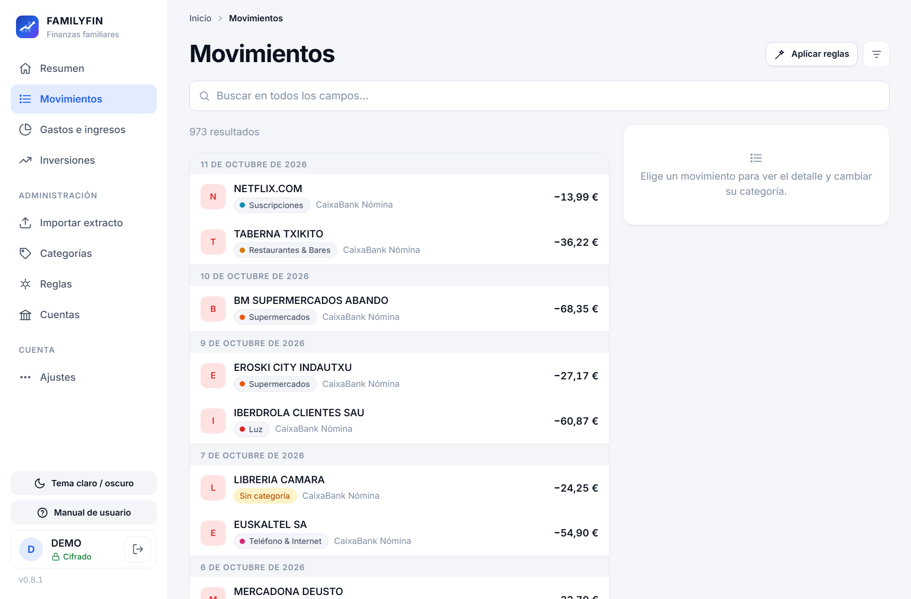
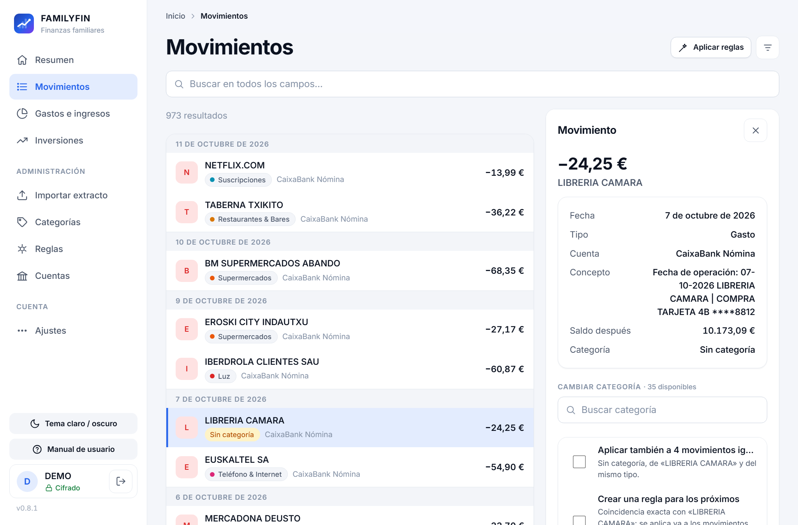
Al tocar un movimiento se abre su ficha: fecha, cuenta, concepto completo de CaixaBank y saldo después.
En el iPhoneLa ficha sube desde abajo.
- Cambiar categoría: busca entre tus categorías y toca la que corresponda.
- Aplicar también a los parecidos: la misma categoría para los movimientos sin categoría del mismo comercio.
- Crear una regla: para que los próximos de ese comercio se clasifiquen solos.
Gastos e ingresos
En qué se va el dinero y de dónde viene
https://192.168.1.20:8765/gastos
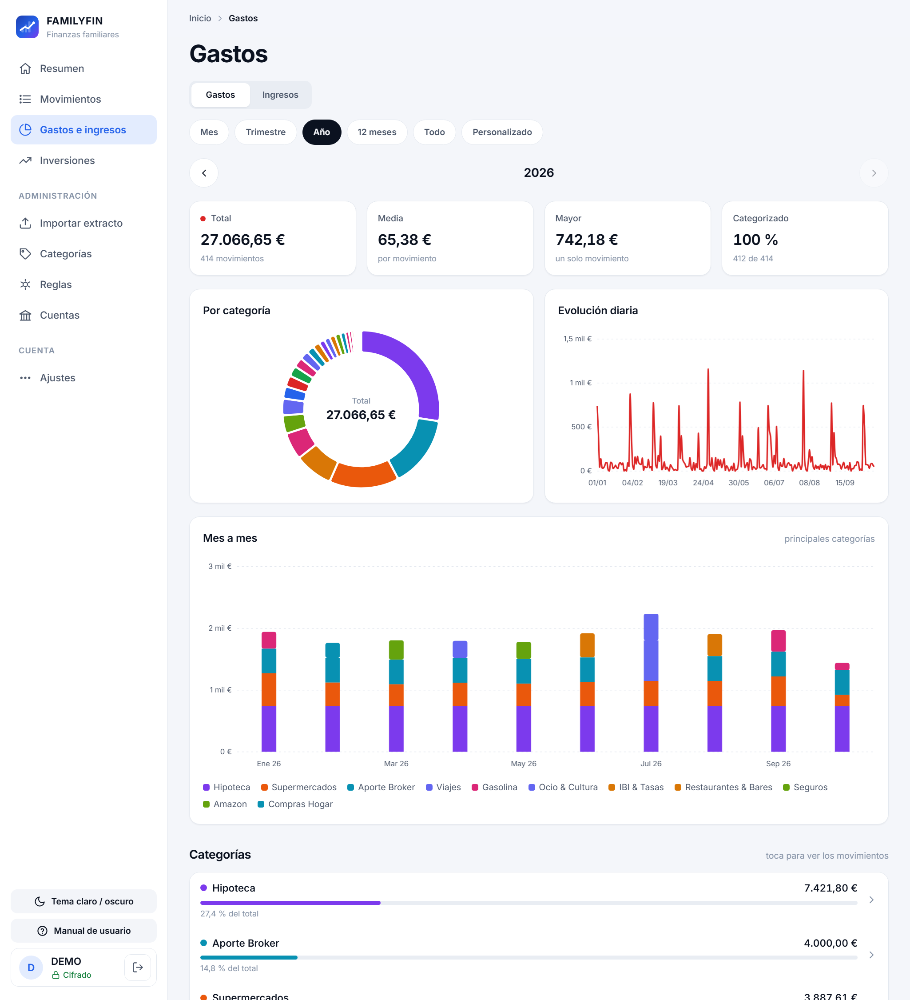
Una pestaña para Gastos y otra para Ingresos, con el mismo diseño. Eliges el periodo (mes, trimestre, año, 12 meses, todo o fechas a medida) y te mueves con las flechas al anterior o siguiente.
- Total, media por movimiento, mayor movimiento y porcentaje categorizado.
- Donut por categoría y evolución diaria.
- Mes a mes con las principales categorías apiladas.
- Lista de categorías con su peso; al tocar una ves sus movimientos.
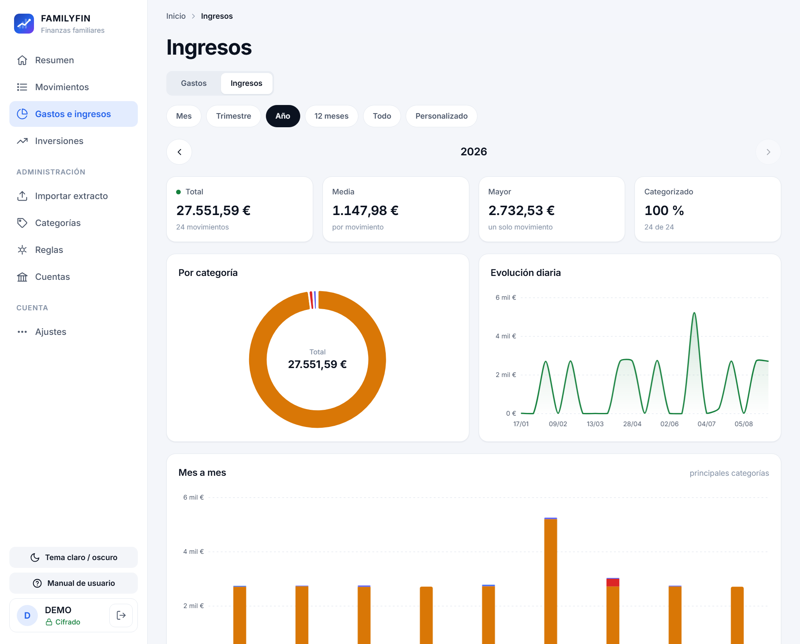
Ingresos del año: nómina, pagas extra de junio y diciembre, devolución de Hacienda y bizums.
Importar extractos
De CaixaBank Now a FAMILYFIN, también desde el iPhone
Desde el banco: en CaixaBank Now entra en la cuenta → Movimientos → elige fechas → Exportar a Excel. En el iPhone el fichero queda en Archivos → Descargas, y desde ahí se sube directamente.
Elegir los ficheros
En Importar extracto, «Elegir archivos» y «Subir y revisar». Puedes elegir varios extractos a la vez (hasta 12, 5 MB cada uno), .xls o .xlsx, tal como los da el banco. En el escritorio también puedes arrastrarlos a la ventana.
Revisar
Ves la cuenta, el IBAN, las fechas y cuántos movimientos son nuevos, posibles duplicados (decides tú) o ya importados (se omiten solos). Con varios extractos, además, el detalle de cada uno: si se solapan, cada movimiento se guarda una sola vez. Un fichero que no sirve (de otra cuenta, repetido o ilegible) se indica con el motivo y el resto se importa igual.
Importar
«Importar N movimientos» los guarda y las reglas los categorizan en el acto. Nada se guarda hasta que confirmas.
https://192.168.1.20:8765/importar
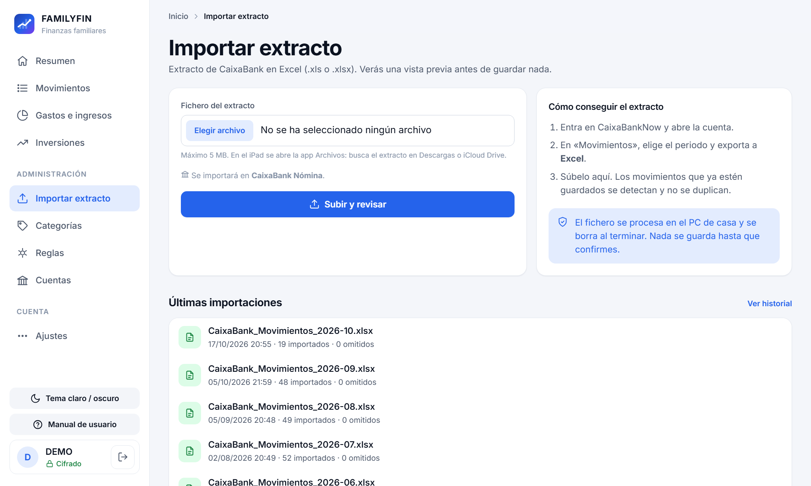
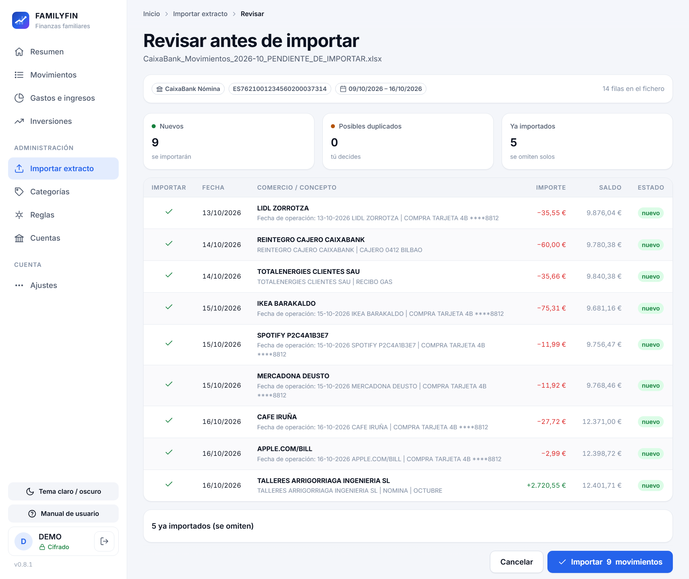
El extracto de octubre de la demo solapa con el anterior: 9 movimientos nuevos y 5 que ya estaban, que se omiten solos.
En el iPhoneLa misma revisión, con el botón de importar siempre a mano.
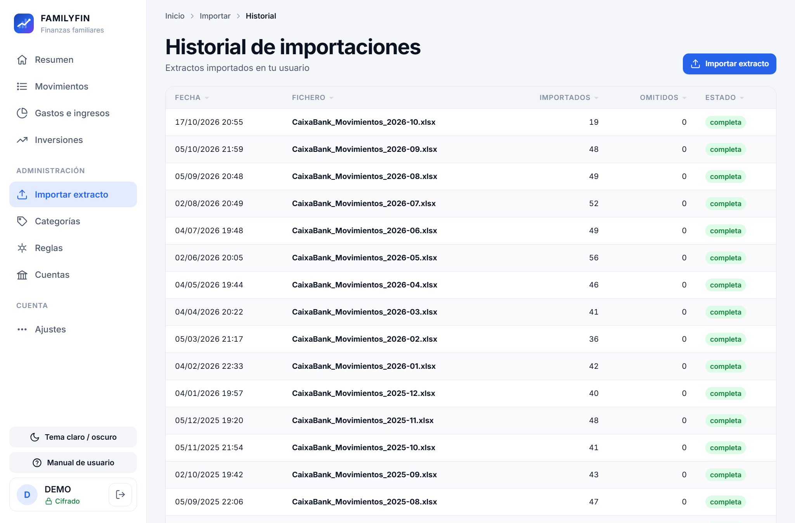
El historial guarda cada importación con su fichero, fecha y recuento.
Categorías y reglas
Tu propio plan de cuentas, aplicado solo
Categorías
Agrupadas por tipo: GASTO, INGRESO, SERV. BANCARIO e INVERSION. Cada categoría muestra cuántos movimientos tiene. Toca una para renombrarla o borrarla; con + creas otra.
Exportar / importar guarda y recupera la biblioteca completa de categorías y reglas, útil para pasarla a otro usuario o PC.
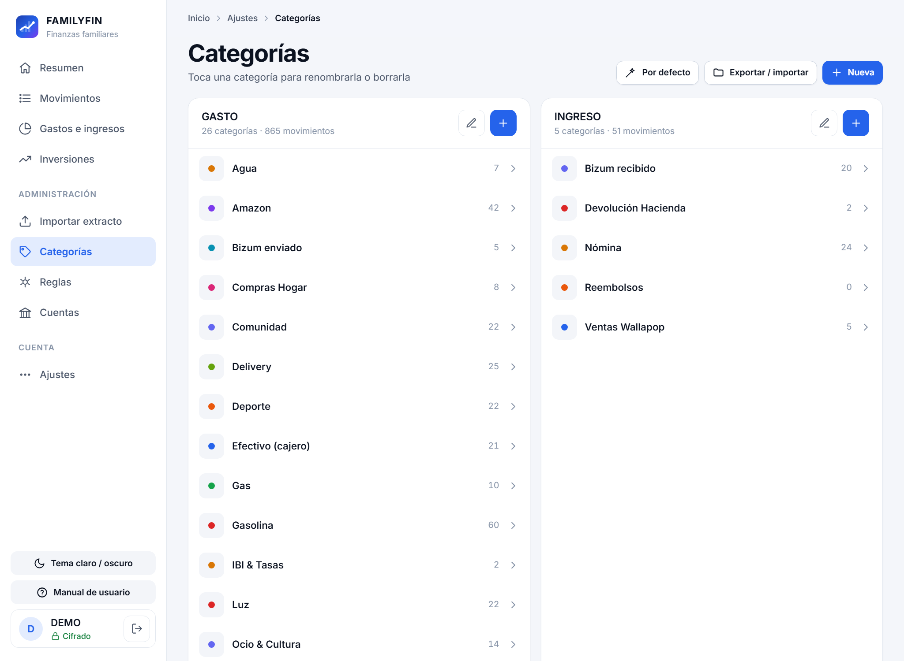
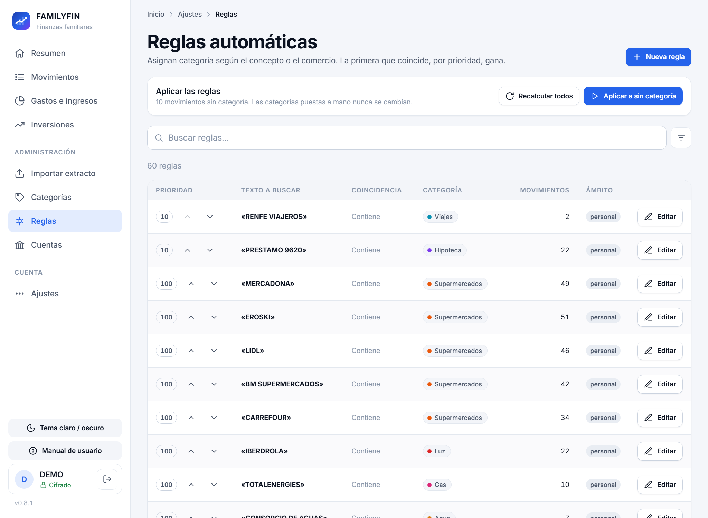
Reglas
Cada regla dice: si el concepto o el comercio contiene un texto (o es exactamente ese texto, o cumple una expresión regular), asigna esta categoría.
- Prioridad: número más bajo, se comprueba antes. Así
RENFE VIAJEROS (Viajes, 10) gana a RENFE (Transporte, 100). Las flechas la suben o bajan.
- Cada regla muestra cuántos movimientos ha clasificado.
- Buscar reglas: el buscador mira el texto, la coincidencia, la categoría, el tipo, el ámbito y la prioridad; los filtros acotan por categoría, tipo, coincidencia, ámbito (global o personal) y uso (con o sin movimientos). Arriba ves «Mostrando 37 de 412 reglas» y «Quitar filtros» lo deja todo como estaba.
- Aplicar a sin categoría o Recalcular todos. Lo que categorizaste a mano nunca cambia.
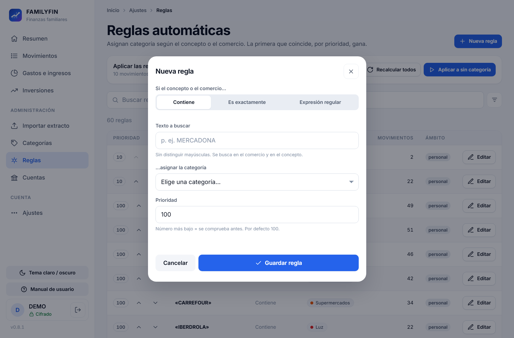
Nueva regla: tipo de coincidencia, texto a buscar, categoría y prioridad.
Inversiones
Tu cartera con cotizaciones reales
Registra compras, ventas, dividendos, splits y acciones recibidas de tu empresa, a mano con el botón + o importando el extracto de DEGIRO o MyInvestor. Las cotizaciones y los tipos de cambio se descargan cada día de Yahoo Finance.
Posiciones: valor de la cartera con su plusvalía, rentabilidad y variación de hoy; capital invertido, rentabilidad anual (TIR), realizado y dividendos del año. Debajo, una fila por valor con acciones, precio, coste, plusvalía y peso.
https://192.168.1.20:8765/inversiones
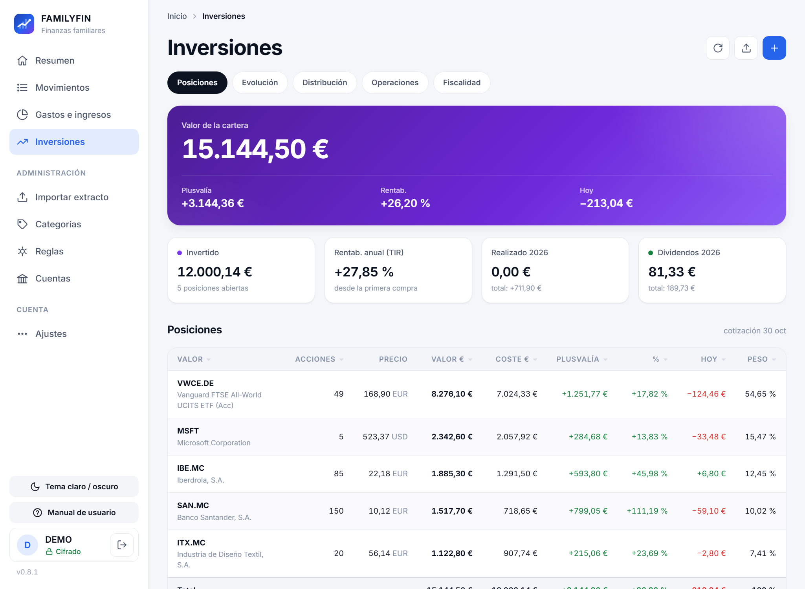
Posiciones: valor de la cartera con su plusvalía, rentabilidad y variación de hoy; capital invertido, rentabilidad anual (TIR), realizado y dividendos del año, y una fila por valor.
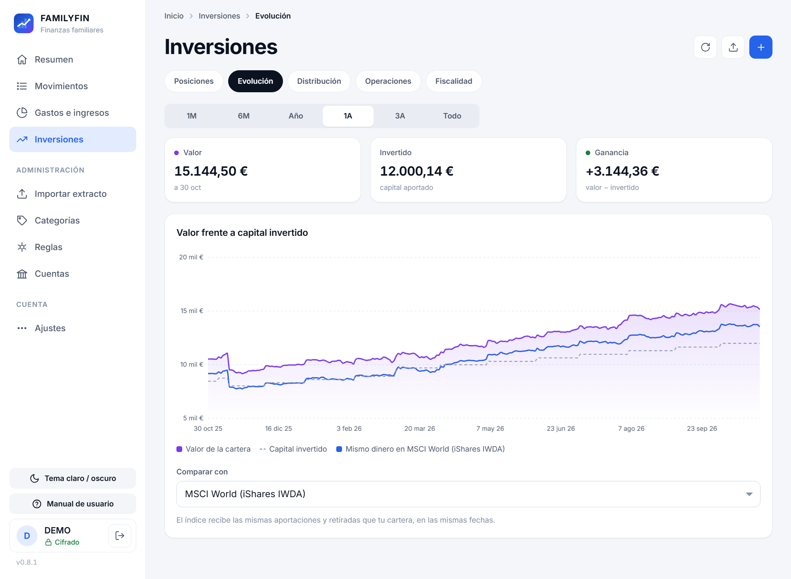
Evolución: valor de la cartera frente al capital aportado y frente al mismo dinero invertido en un índice (MSCI World, S&P 500 o IBEX 35).
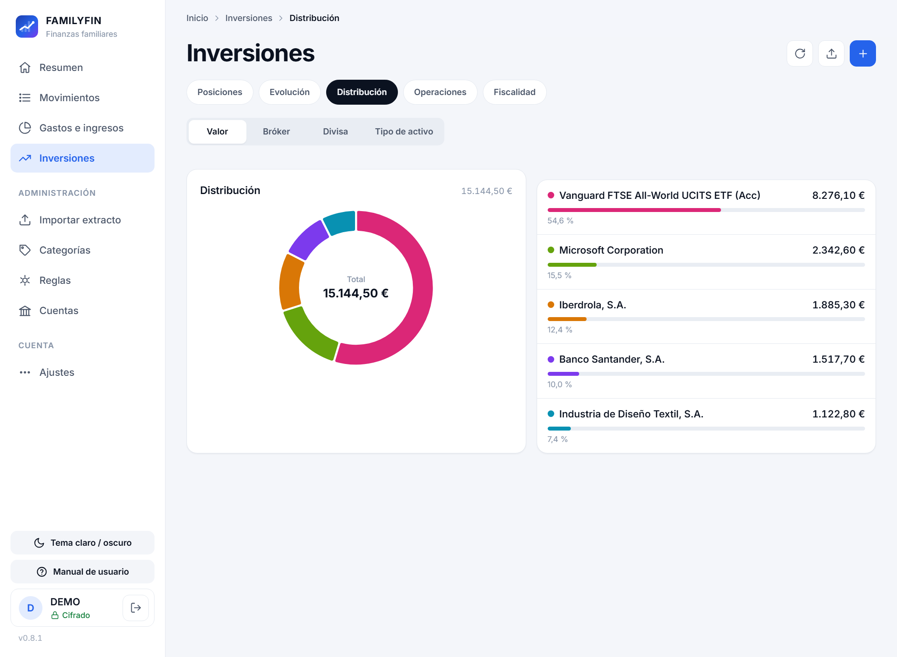
Distribución: reparto de la cartera por valor, bróker, divisa o tipo de activo.
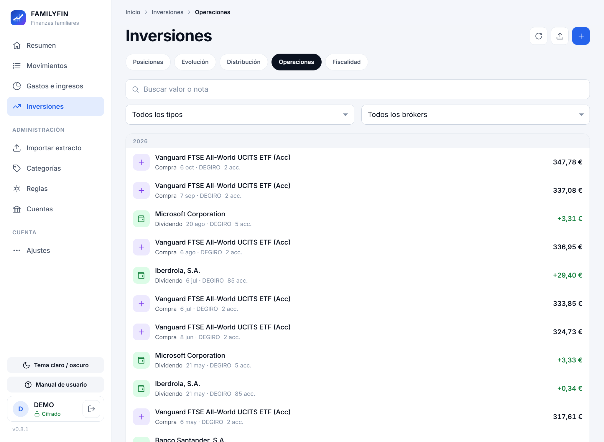
Operaciones: histórico de compras, ventas y dividendos, con buscador y filtros por tipo y bróker.
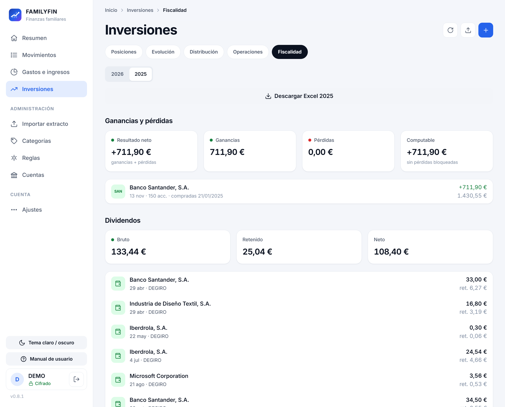
Fiscalidad: ganancias y pérdidas FIFO por ejercicio (con la regla de los dos meses), dividendos, retenciones y descarga en Excel. En la imagen, 2025 con la venta de Santander.
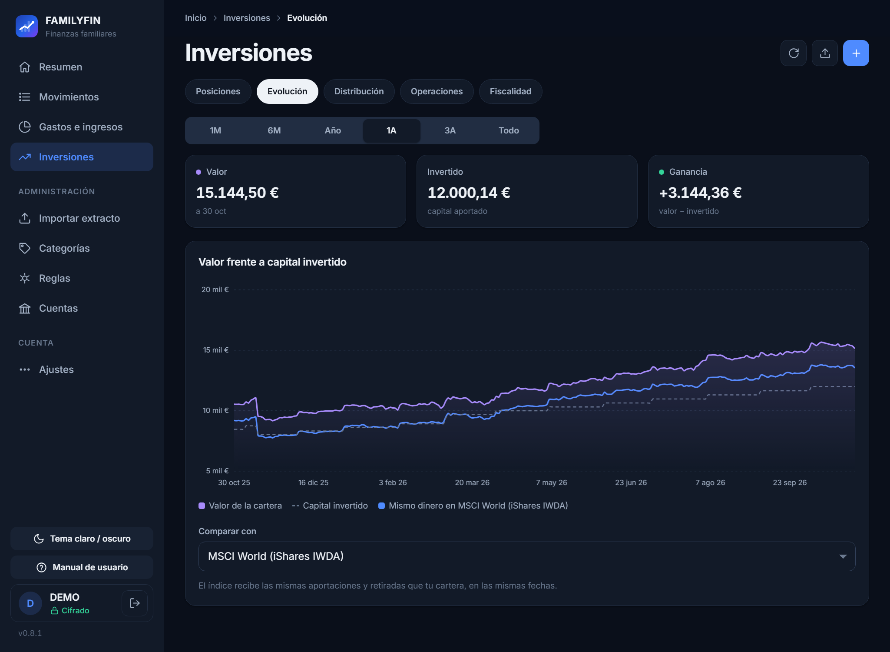
Evolución frente al MSCI World, en tema oscuro.
En el iPhoneCartera y posiciones de un vistazo.
iPhone
Pensada primero para el móvil
- Solo en casa y cifrada. La web responde únicamente dentro de tu red y siempre por HTTPS (puerto
8765 por defecto). Cada dispositivo instala una vez el certificado propio de FAMILYFIN y Safari muestra el candado normal.
- Sesiones cortas. La sesión caduca a los 30 minutos sin uso y como máximo a las 12 horas. En Ajustes ves las sesiones abiertas.
- Como una app. En Safari, «Compartir → Añadir a pantalla de inicio».
- Sincronizada. Lo que cambias en el móvil aparece al momento en el PC.
Desliza la galería para ver las pantallas a tamaño iPhone.
ResumenSaldo, periodo y gráficas.
MovimientosAgrupados por día.
FichaCambiar categoría o crear regla.
Gastos e ingresosPor mes, trimestre, año o 12 meses.
ImportarDesde Archivos del iPhone.
InversionesCartera y posiciones.
EvoluciónFrente a un índice.
ReglasCrear, ordenar y aplicar.
AjustesAdministración e informes.
Ajustes
Tu cuenta, administración y dispositivos
https://192.168.1.20:8765/mas
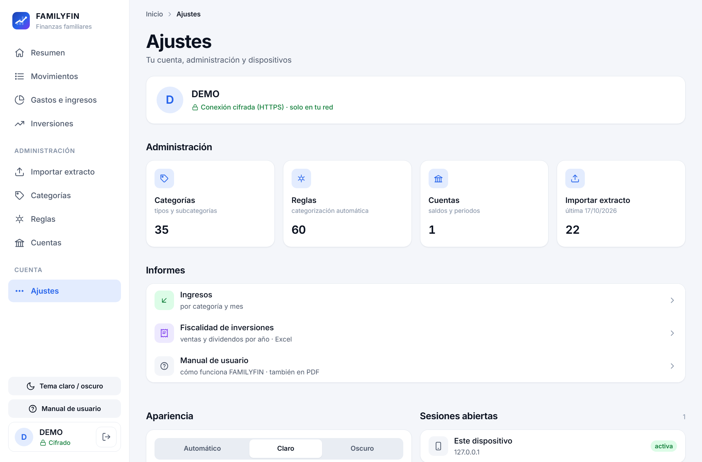
En la web, Ajustes reúne la administración (categorías, reglas, cuentas e importaciones), los informes (ingresos y fiscalidad de inversiones en Excel), la apariencia y las sesiones abiertas.
Mi cuenta: cada miembro gestiona solo su propia cuenta; nadie puede tocar la de otro.
- Cambiar contraseña: pide la actual. Al guardarla se cierra tu sesión en los demás dispositivos. La nueva debe tener entre 8 y 64 caracteres, no puede ser tu nombre ni una contraseña muy común; mejor una frase fácil de recordar.
- Cambiar nombre de usuario: con tu contraseña. El nombre nuevo vale en el PC y en la web; no se admiten nombres casi iguales a otro («Ana» y «ana») ni «DEMO».
- Descargar mis datos: con tu contraseña, un
.zip con tus movimientos, cuentas, categorías, reglas, operaciones de inversión y efectivo en un Excel, y tus categorías y reglas en un archivo que FAMILYFIN puede volver a cargar. Solo tus datos, nunca los de otros miembros ni las reglas globales. El enlace sirve una vez durante 2 minutos. Es una exportación, no una copia de seguridad.
- Borrar mi cuenta: escribe tu nombre y tu contraseña. Antes de borrar se guarda una copia completa en la carpeta de copias del PC (nunca se descarga en el móvil); si la copia falla, no se borra nada. Si alguna regla global de la familia usa tus categorías, primero hay que moverla o borrarla desde el PC.
Familia: la lista de miembros y las invitaciones. Invitar a alguien genera un código como 7KQM-4XTR que sirve una sola vez y caduca a los 15 minutos; puedes copiarlo o compartirlo y anular las invitaciones pendientes (como mucho 3 a la vez). La persona invitada lo escribe en la pantalla de acceso, elige su usuario y su contraseña y entra directamente. Los códigos equivocados cuentan como intentos fallidos y bloquean un rato los nuevos intentos.
En el PC, el botón ⋮ junto a tu nombre (barra lateral) ofrece lo mismo: cambiar contraseña (cierra tus sesiones en la web), cambiar nombre, exportar tus datos y eliminar la cuenta.
En la aplicación del PC, Configuración añade lo que afecta a la instalación:
- Datos: la carpeta de la base de datos, que puede estar en una carpeta sincronizada (OneDrive, iCloud).
- Copias de seguridad: automáticas cada 24 horas por defecto, en
.zip; se conservan las más recientes y se pueden restaurar.
- Seguridad: pedir contraseña al iniciar y ocultar importes.
- Acceso web: activarlo y elegir el puerto.
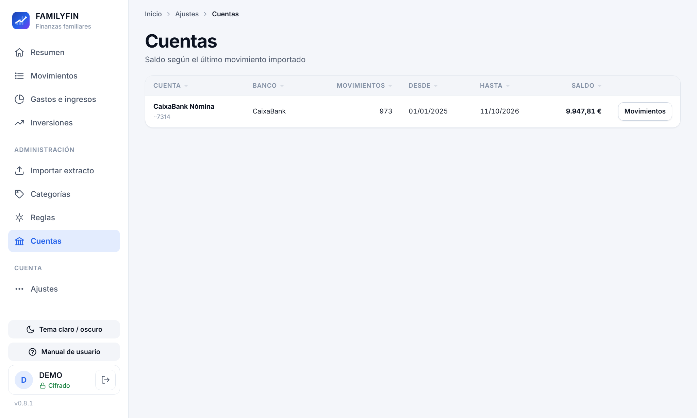
Cuentas: cada cuenta con su saldo y el periodo que cubren sus extractos.
La demostración
Conoce a DEMO, el usuario de prueba
Todas las capturas de este manual usan un usuario inventado: un ingeniero que vive en Bilbao, cobra la nómina y paga la hipoteca en CaixaBank, y cada mes aparta 400 € para un ETF en DEGIRO. Ninguna cifra es real. Los extractos se generaron con el formato exacto de CaixaBank y entraron por el importador normal; las cotizaciones de las acciones sí son reales.
973movimientos, ene 2025 → oct 2026
22extractos importados
99 %categorizados por reglas
35 · 60categorías · reglas
44operaciones de inversión
15.477 €cartera a 16 oct 2026
Ingresos y gastos por mes (oct 2025 – sep 2026)
IngresosGastos
Ver como tabla
Mayores partidas de salida en 12 meses
Incluye el ahorro que sale de la cuenta (aportaciones al bróker y al plan de pensiones).
Cómo probar la demo: en la pantalla de acceso, del PC o de la web, entra con el usuario
DEMO y la contraseña 123456.
Es un usuario más de la aplicación, pero vive aparte: no ve los datos de la familia ni sus reglas globales, así que puedes enseñárselo a cualquiera. Para probar la importación en directo, sube el extracto de octubre que queda sin importar en dist\demo\extractos_demo_real: solapa con la última importación, así que verás cómo se omiten los movimientos ya importados.
Dudas frecuentes
Antes de empezar
¿Mis datos salen de mi casa?
No. La base de datos es un fichero en tu PC y la web solo responde dentro de tu red, cifrada. La aplicación solo se conecta a internet para descargar cotizaciones y tipos de cambio públicos de Yahoo Finance; no envía tus movimientos a ningún sitio.
¿Necesito dar mis claves de CaixaBank?
No. FAMILYFIN nunca se conecta al banco. Tú descargas el Excel desde CaixaBank Now y lo importas.
¿Puedo usarlo fuera de casa?
No directamente: la web está limitada a tu red local a propósito. Fuera de casa no hay acceso a tus datos.
¿Qué pasa si importo dos veces el mismo extracto?
Nada: los movimientos idénticos se omiten. Si hay alguno dudoso, la revisión te pregunta antes de guardarlo.
¿Puedo subir de golpe todos los extractos que tengo descargados?
Sí, aunque se solapen (un histórico largo y varios semanales, por ejemplo). Se revisan juntos, cada movimiento entra una sola vez y en el historial queda una importación por fichero. Se guardan todos o ninguno.
¿Puedo usarlo con otros bancos?
El importador de movimientos está hecho para el formato de CaixaBank. Para inversiones acepta extractos de DEGIRO y MyInvestor, y cualquier otro bróker introduciendo las operaciones a mano.
¿Y si cambio de ordenador?
Copia la carpeta de datos (o restaura una copia de seguridad) y, en el nuevo PC, apunta FAMILYFIN a ella desde Configuración → Datos o con «Buscar BD» en la pantalla de acceso.